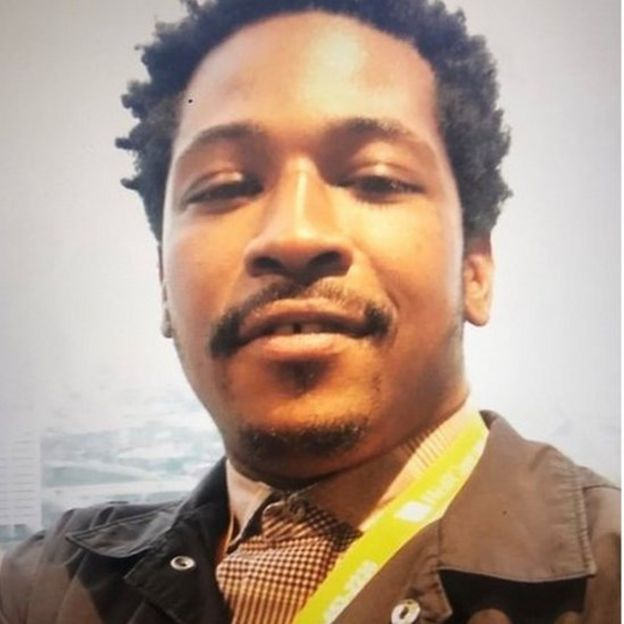

Cuando las protestas por la muerte de George Floyd siguen creciendo por todo el mundo un nuevo caso de violencia policial contra un afroestadounidense estremece otra vez a EE.UU. este fin de semana.
Un video de seguridad revelado este sábado muestra a un agente de la policía de Atlanta que dispara contra un hombre negro al que había despertado unos minutos antes porque se encontraba durmiendo en un área de recogida de pedidos de un restaurante de comida rápida. Rayshard Brooks, de 27 años, fue declarado muerto poco después, en lo que las autoridades forenses de Atlanta han calificado como "homicidio". Este miércoles el policía que le disparó por la espalda, Garrett Rolfe, fue acusado formalmente de homicidio y asalto. Rolfe, que ya fue despedido, se enfrenta a 11 cargos relacionados con la muerte de Brooks. Si es declarado culpable, podría incluso ser condenado a pena de muerte. Tras la difusión de la grabación del encuentro del hombre con la policía, miles de personas se lanzaron otra vez a las calles, principalmente en Atlanta, donde incluso bloquearon algunas de las principales carreteras para protestar contra el racismo y la brutalidad policial.
La jefa de la policía de esa ciudad, Erika Shields, renunció al cargo tras el incidente por considerar que la acción de los agentes bajo su mando había sido injustificada. La alcaldesa de Atlanta, Keisha Lance Bottoms, quien anunció la partida de Shields, también pidió la suspensión inmediata del agente de policía involucrado en el incidente, que se hizo efectiva más tarde en la noche. "Lo que ha quedado muy claro en las últimas semanas en Atlanta es que, si bien tenemos una fuerza policial llena de hombres y mujeres que trabajan junto a nuestras comunidades (…) ha habido una desconexión con lo que son nuestras expectativas y las interacciones que existen con nuestros oficiales y las comunidades en las que se les confía la protección", afirmó Bottoms. Durante las últimas semanas, miles de personas en todo Estados Unidos han estado protestando por la muerte de George Floyd, otro afroestadounidense que también murió en custodia policial.

¿Qué pasó el viernes por la noche? Una patrulla de policías de Atlanta fue enviada el viernes por la noche a un restaurante de la cadena Wendy's por una queja sobre un hombre estacionado y dormido en el área donde se recogen los pedidos en los restaurantes de comida rápida. De acuerdo con un informe preliminar de la Oficina de Investigación de Georgia, los agentes le realizaron una prueba de alcoholemia, que mostró que el hombre tenía niveles altos de alcohol en sangre, por lo que los agentes intentaron ponerlo bajo custodia. Según el informe oficial, tras más de 40 minutos de charla, el joven se resistió al arresto y tras un forcejeo con los oficiales, les arrebató una de las pistolas eléctricas (taser) que usan e intentó escapar.
En el video se ve cómo Brook usa el taser contra la policía mientras huye a la carrera. En la grabación, se escuchan luego unos disparos y se ve a Brooks en el suelo. "El agente disparó su arma y Brooks recibe el impacto", dijo el informe. El joven fue llevado al hospital pero luego murió y uno de los agentes fue tratado por una lesión tras el incidente.

Este es el tiroteo número 48 que involucra a policías que la Oficina de Investigación de Georgia ha investigado este año, según ABC News. De esos casos, 15 de terminaron con los sospechosos muertos. Según reportes de medios locales, el restaurante donde tuvo lugar el incidente fue incendiado este sábado.
¿Qué ha sucedido en otras ciudades de los Estados Unidos? Numerosas manifestaciones han sacudido Estados Unidos y varios países del mundo desde la muerte de Floyd. En Minneapolis, donde murió Floyd, el Ayuntamiento aprobó una resolución el viernes para reemplazar su departamento de policía con un sistema de seguridad pública dirigido por la comunidad. El consejo dijo que comenzaría un proceso de un año de participación "con cada miembro de la comunidad dispuesto en Minneapolis" para llegar a un nuevo modelo de seguridad pública. En Nueva York, el gobernador Andrew Cuomo ordenó a los departamentos de policía que emprendieran reformas importantes. También dijo que dejaría de financiar a las autoridades locales que no adoptaron reformas para abordar el uso excesivo de la fuerza y los prejuicios en sus departamentos de policía.